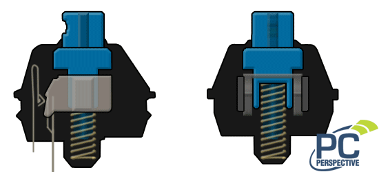
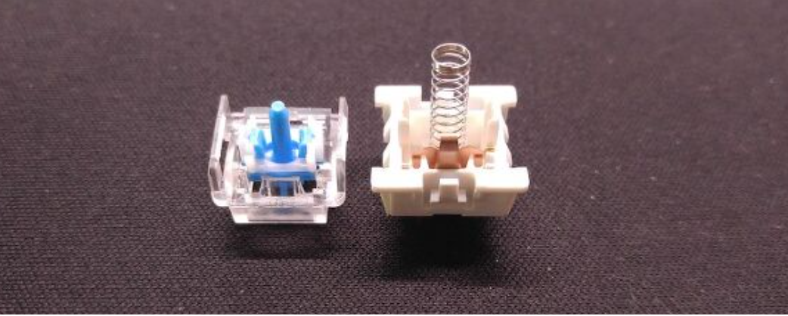
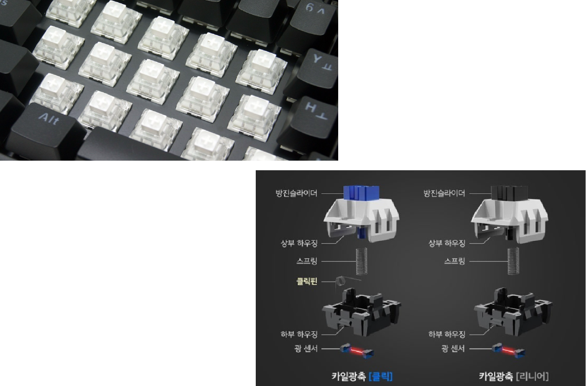

특징

-스위치를 누르면 '짤칵' 하는 경쾌한 소리가 나며 입력된다.
-스타크래프트 같은 전략 시뮬레이션 게임 혹은 개발 도입 부에 경쾌한 리듬으로 시작할 때 사용하면 좋다.
-체리 청축, 녹축/오테뮤 청축/카일 광축 클릭 등 다양한 클릭 축이 존재한다.
-소음이 상당해서 사무실에서는 절대 사용할 수 없을 스위치이다.
-체리 청축의 하우징을 이용하여 넌클릭 스위치인 홀리치키를 만들 수도 있다.
-일반적으로, 윤활 진행 시 스프링, 마찰이 발생하는 벽면만 윤활한다.
체리 청축
-체리 청축은 오테뮤나 카일 광축에 비해서 점잖은 클릭축이다.
-리니어/넌클릭과 마찬가지로 세대가 나누어져 있다.
-생산 설비가 노후화됨에 따라 플라스틱 사출에 문제가 발생하였고, 그때마다 설비를 재정비하였다.
-체리 갈축보다 걸림이 훨씬 세고, 클릭축 중에서는 점잖지만 일반 넌클릭이나 리니어 스위치와는 비교도 안 될 정도로 시끄럽다. 회장/사장님/창업 멤버가 아닌 이상 사무실에서 사용하는 것을 불가능.
-마찬가지로 걸림이 상당하고 소음이 크기 때문에 호불호가 갈린다. 장시간 타건하는 것도 사람에 따라 힘들 수 있다.
-모든 넌클릭 제품을 통틀어 가장 접점부 소음이 적지만, 체리 리니어와 마찬가지로 서걱임이 굉장히 심하여 윤활을 필요로 한다.
-체리 리니어나 넌클릭과 마찬가지로, RGB 모델은 일반적인 체리축과는 다른 재질로 되어 있어 키감이 상당히 다르다. 빈 소리와 좋지 못한 접점부 때문에 Non-RGB, 검정 하우징을 선호한다.
오테뮤 청축
 오테뮤 청축-오테뮤 청축은 체리 청축보다는 훨씬 촐랑대는 타건음이다.
-체리 청축보다 더 상쾌하고 경쾌한 타건음을 듣고 싶다면 오테뮤 청축을 강력하게 추천.
-최근 오테뮤 청축과 거의 비슷한 GTMX 청축을 출시하였음.
-내구도 이슈가 있었다.
-적당한 피시방 감성의 키보드를 원한다면 오테뮤 청축이 장착된 게이밍 키보드를 찾아보는 것도 나쁘지 않다.
-체리 청축의 2/3 가격이다.
카일 / 박스백축
-카일 광축 클릭 : 오테뮤 청축이나 체리 청축보다 살짝 무거운 키압.
-소리는 오테뮤 청축과 비슷하나, 좀더 단단한 느낌의 청축이다.
-값이 저렴하고, 카일 광축을 사용하는 키보드 중 스위치를 갈아끼울 수 있는 핫스왑 형식의 키보드가 많아 관리가 쉽다.
-카일 박스 백축 : 일반 청축과는 다르게 누를 때 한 번, 뗄 때 한 번. 총 2번 클릭음이 발생하게 된다.
-모나미 볼펜 똑딱이는 것과 비슷한 소리가 난다. 다만, 한 번 누르면 총 2번의 클릭음이 들리기 때문에 소음이 굉장히 심하다.
-타건감도 호불호가 많이 갈린다.